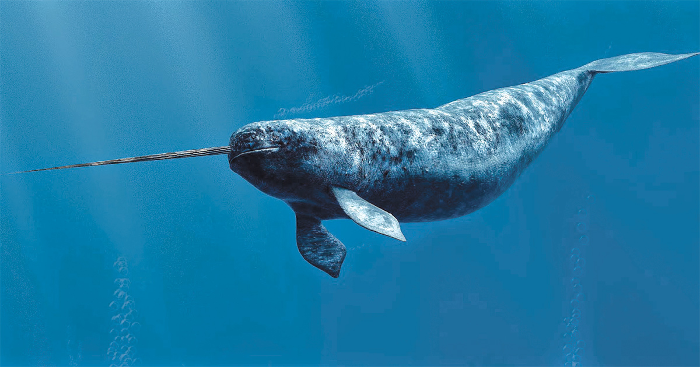

Narwhals: The Unicorns of the Sea
Narwhals, known for their iconic spiraled tusks, inhabit the frigid waters of the Arctic. These "unicorns of the sea" rely on echolocation to hunt fish and squid in their social pods. Threatened by climate change and human activities, conservation efforts are crucial to protect these enigmatic creatures and their icy home.
Narwhals, often dubbed as the unicorns of the sea, are fascinating marine mammals known for their long spiral tusks.
Overview
Narwhals are medium-sized whales found in the Arctic waters. They are easily recognizable by their long, helical tusks protruding from their heads, which can grow up to 10 feet in length. These tusks are actually elongated canine teeth.
Habitat
Narwhals primarily inhabit the icy waters of the Arctic Ocean and its adjacent seas. They are known to migrate seasonally, moving towards the pack ice in the winter and retreating to more open waters during the summer months.

Behavior
Narwhals are social animals and often travel in groups called pods. They feed mainly on fish and cephalopods, using their tusks to stun prey and navigate through the ice. Despite their intimidating appearance, narwhals are generally shy and elusive creatures.